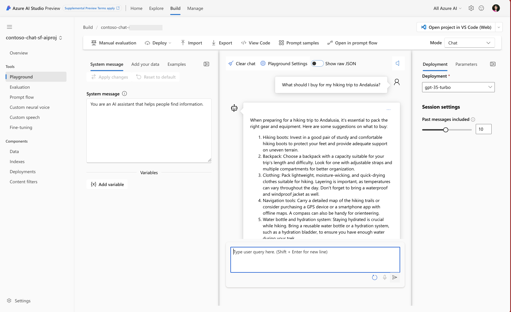
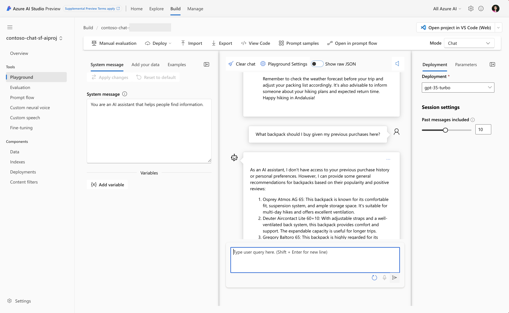
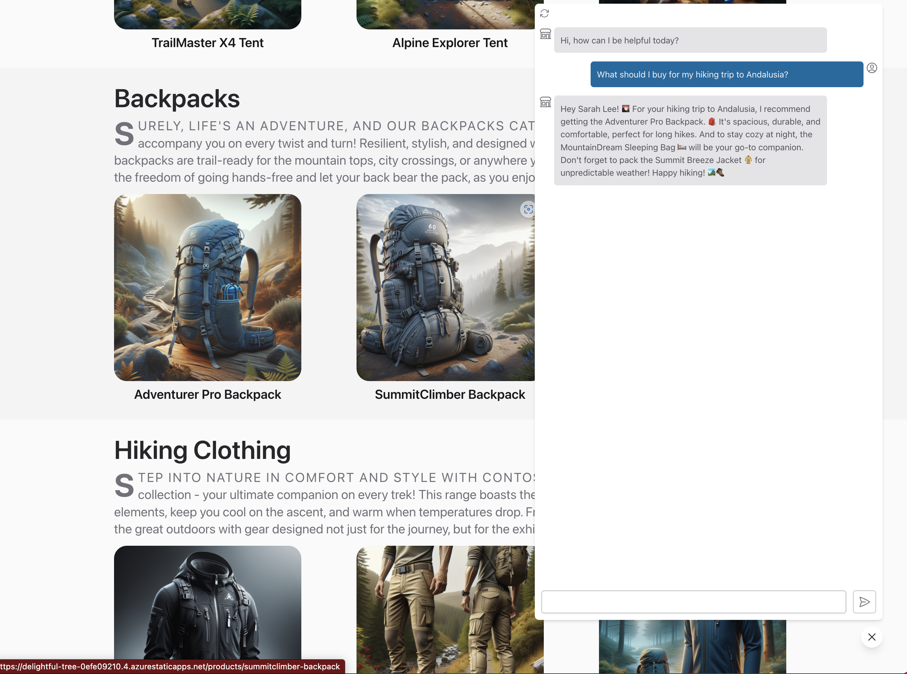
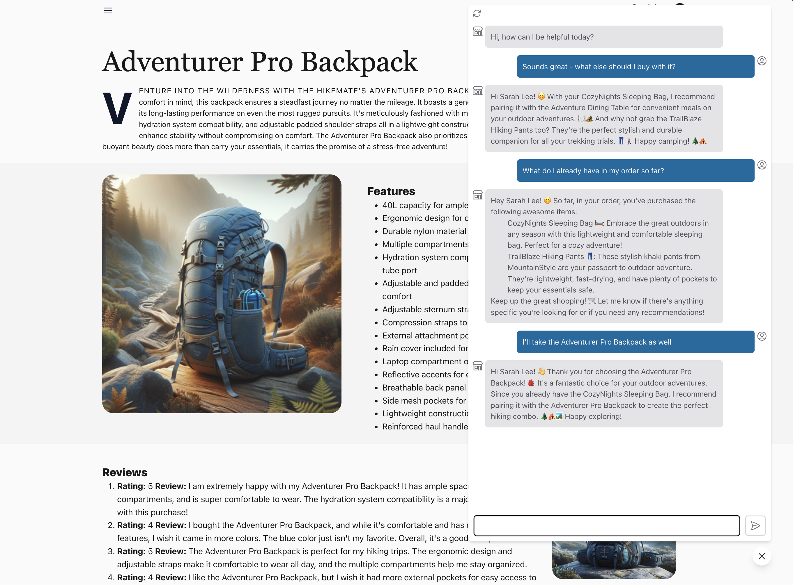

02 | The App Scenario
Consider this familiar enterprise scenario!
You're a new hire in the Contoso Outdoors organization. They are an e-commerce company with a successful product catalog and loyal customer base focused on outdoor activities like camping and hiking. Their website is hugely popular but their customer service agents are being overwhelmed by calls that could be answered by information currently on the site.
For every call they fail to answer, they are potentially losing not just revenue, but customer loyalty. You are part of the developer team tasked to build a Customer Support AI into the website to meet that demand. The objective is to build and deploy a customer service agent that is friendly, helpful, responsible, and relevant in its support interactions.
Let's walk through how you can make this happen in your organization, using the Azure AI Platform. Well start with the ideation phase which involves identifying the business case, connecting to your data, building the basic prompt flow (LLM App), then iterating locally to extend it for your app requirements. Let's understand how this maps to our workshop.
Contoso Outdoors (Website)
The Contoso Chat (LLM App) is being designed for integration into the Contoso Outdoors site (Web App) via the chat icon seen at the bottom right. The website landing page features the Contoso Outdoors product catalog organized neatly into categories like Tents and Backpacks to simplify discovery by customers.

When a customer clicks an item, they are taken to the product details page with extensive information that they can use to guide their decisions towards a purchase.

Step 1: Identify Business Case
The Contoso Chat AI should meet two business objectives. It should reduce customer support calls (to manual operator) by proactively answering customer questions onsite. It should increase customer product purchases by providing timely and contextual information to help them finalize the purchase decision.
Chat Completion (Basic)
Let's move to the next step - designing our Contoso Chat AI using the relevant Large Language Model (LLM). Based on our manual customer service calls, we know questions can broadly fall into two categories:
- Product focus ➡ "What should I buy for my hiking trip to Andalusia?"
- Customer focus ➡ "What backpack should I buy given my previous purchases here?"
We know that Azure OpenAI provides a number of pre-trained models for chat completion so let's see how the baseline model works for our requirements, by using the Azure AI Studio Playground capability with a gpt-3.5-turbo model deployment. This model can understand inputs (and generate responses) using natural language.
Let's see how it responds to the two questions above.
-
1. No Product Context. The pre-trained model provides a perfectly valid response to the question but it lacks the product catalog context for Contoso Outdoors!. We need to refine this model to use our data! 
-
2. No Customer History. The pre-trained model makes it clear that it has no access to customer history and consequently makes general recommendations that may be irrelevant to customer query. We need to refine this model to understand customer identity and access their purchase history. 
Step 2: Connect To Your Data
We need a way to fine-tune the model to take our product catalog and customer history into account as relevant context for the query. The first step is to make the data sources available to our workflow. Azure AI Studio makes this easy by helping you setup and manage connections to relevant Azure search and database resources.
Chat Augmentation (RAG)
That brings us to the next step - prompt engineering. We need to augment the user question (default prompt) with additional query context that ensures Contoso Outdoor product data is prioritized in responses. We use a popular technique know as Retrieval Augmented Generation (RAG) that works as shown below, to generate responses that are specific to your data.

We can now get a more grounded response in our Contoso Chat AI, as shown.

Step 3: Build Basic PromptFlow
We now need to add in a step that also takes customer history into account. To implement this, we need a tool that helps us orchestrate these various steps in a more intuitive way, allowing user query and data to "flow" through the processing pipeline to generate the final response.
Chat Orchestration (Flow)
The previous step gives us a basic flow that augments predefined model behaviors to add product context. Now, we want to add another tool (or processing function) that looks up customer details for additional prompt engineering. The end result should be a user experience that looks something like this, helping move the user closer to a purchase decision.

Step 4: Develop & Extend Flow
Flow orchestration is hard. This is where PromptFlow helps, allowing us to insert a customer lookup function seamlessly into the flow graph, to extend it. With the Azure AI platform, you get PromptFlow capabilities integrated seamlessly into both development (VS Code) and deployment (Azure AI Studio) environments for a streamlined end-to-end developer experience.
Evaluate & Deploy (E2E)
This ends the ideation phase of the application lifecycle we saw earlier. PromptFlow works seamlessly with Azure AI Studio to streamline the next two steps of the lifecycle (evaluate and deploy), helping get deliver the final Contoso Chat Support Agent AI experience on the Contoso Outdoors website. Here is what a multi-turn conversation with customers might look like now:

Your customer support AI is a hit!
Not only can it answer questions grounded in your product catalog, but it can refine or recommend responses based on the customer's purchase history. The conversational experience feels more natural to your customers and reduces their effort in finding relevant products in information-dense websites.
You find customers are spending more time in chat conversations with your support agent AI, and finding new reasons to purchase your products.
Workshop: Build a production RAG with PromptFlow & Azure AI Studio
In the next section, we'll look at how we can bring this story to life, step-by-step, using Visual Studio Code, Azure AI Studio and Prompt Flow. You'll learn how to provision Azure AI Services, engineer prompts with Retrieval-Augmented Generation to use your product data, then extend the PromptFlow to include customer lookup before evaluating and deploying the Chat AI application to Azure for real-world use.